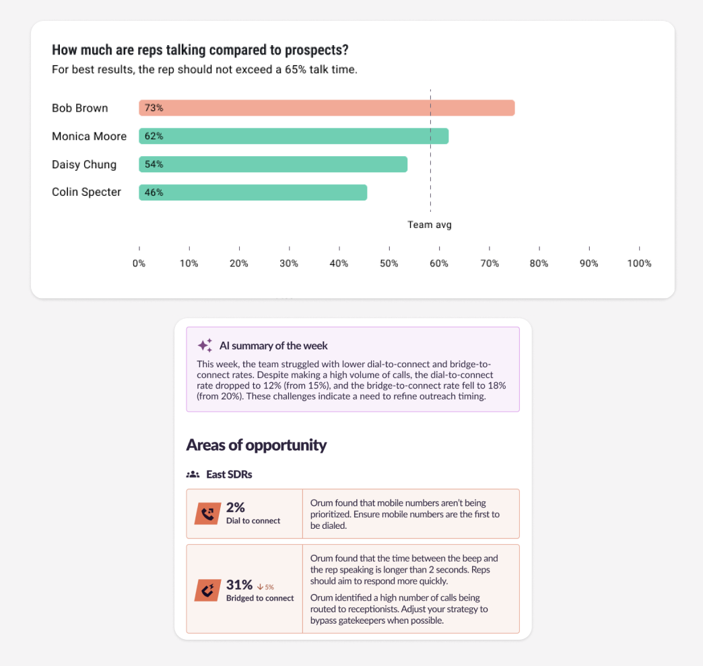

The challenge
Managers relied on analytics to assess their teams, identify problems, and coach reps more effectively. But the existing experience was sparse, hard to scan, and not giving customers the level of visibility they needed. It was also becoming a real business problem: customers were explicitly citing analytics when comparing Orum to competitors.
Give sales teams the data they need to assess performance, identify what needs attention, and improve their dialing strategy.
Reduce churn risk and make analytics a stronger reason to stay with Orum.
Understanding what managers actually needed
I interviewed 12 SDR managers to understand how they used data to coach their teams. A recurring pattern emerged: when a rep missed a target, managers worked backward through the numbers to figure out why. KPIs were the starting point of an investigation, not the final answer.
Managers traced results from dials to connects, conversations, and meetings to identify where reps needed support.
Managers pieced together data from Orum, Salesforce, Outreach or Salesloft, plus their own spreadsheets and scorecards.
Seven interviewees described comparing reps, often to spot coaching opportunities or recognize top performers.
Managers also reviewed dashboards with reps during one-on-ones and shared performance summaries with their teams. This made scanability and clear explanations just as important as analytical depth.
Users ranged from KPI-focused managers to those who wanted to inspect every detail, and from new reps to experienced high performers. How could the same experience offer an immediate answer and still support deeper investigation?
Manager
Manager
Rep
Performing Rep
Designing the data to tell a story
The key shift was treating Analytics as a way to answer questions, not a collection of charts. I designed each page to tell a story from top to bottom: start with the overall picture, compare where performance differs, then drill into the underlying activity and outcomes that explain it.
Top-line KPIs give users a quick read on performance. Tables, trends, and more detailed visualizations below them help explain what is driving those numbers.
A busy manager can stop after the summary. Someone who wants to investigate can keep moving down the page, compare reps or accounts, and explore specific patterns without changing tools.
Rather than create one overloaded dashboard, I grouped the data around questions managers actually asked. We prioritized what to build using research frequency, potential impact, technical feasibility, and competitive gaps.
What needed to change
The existing experience made managers work too hard to connect the dots. Important metrics were difficult to scan, useful tables and breakdowns were tucked behind interactions, and related information felt disconnected. Users often resorted to external tools to assemble the story themselves.

Every visualization was a design problem
Creating each chart meant first identifying the question it should answer, then choosing the right measures, comparisons, and level of detail. I explored how information could be grouped, how users would interpret the visualization, and which interactions would make it useful rather than merely informative.
This required close collaboration with engineering. We were working within the capabilities and customization limits of Luzmo, a third-party analytics platform, so a promising design was not necessarily straightforward to build. I worked closely with engineers to understand what the data and tooling could support, weigh tradeoffs, and iterate toward solutions we could actually ship.

As PM support dropped off, I took on the PM role for most of the project alongside design and research. I drove prioritization, coordinated with go-to-market teams, and made scope decisions with engineering, balancing what customers needed against what we could deliver for the release.
The redesigned analytics system
Each dashboard followed the same principle: make the headline understandable immediately, then reveal the details that help users decide what to do. The order of the visualizations was intentional, with each section building on the one above it.
How is my team performing?
Rep Performance begins with an at-a-glance view of key activity and conversion rates. Below that, a comparison table helps managers identify which reps are struggling and at which step. The conversion funnel makes drop-off visible, a trend chart shows whether things are improving, and disposition breakdowns help explain what is happening on calls. Together, these views take a manager from who needs coaching? to what should we coach them on?

Which accounts are working?
Account Performance starts with overall account-level metrics, then lets managers compare individual accounts and inspect their call outcomes. The stacked disposition chart helps reveal how results differ across accounts, not just how much activity each one receives. This supports decisions about where to focus outreach and where a different approach may be needed.

Why are prospects saying no?
Managers were coaching reps on how to handle objections, but had little data on which objections prospects were raising or how successfully each rep was responding. Without that visibility, coaching was often based on anecdotes rather than specific areas for improvement.
I structured the dashboard to move from team-level patterns to targeted coaching: first, which objections occur most often; next, which ones reps are overcoming and converting into meetings; and finally, a rep-by-objection heatmap that makes individual strengths and gaps visible. Managers often compare reps and use calls from high performers to train others, so the data is clickable throughout. Selecting a chart segment opens the corresponding filtered calls in Call History, where managers can listen to real conversations and bring concrete examples into coaching.

When should we call?
I designed two heatmaps to make a useful comparison possible: when prospects are most likely to connect, and when reps are actually dialing. Showing these patterns together helps managers spot mismatches between effort and opportunity. Day-of-week summaries below give a simpler way to confirm the pattern and adjust dialing strategy.

Rollout and impact
We rolled out the redesign over three weeks, scheduling customer feedback conversations and collecting internal feedback in a dedicated Slack channel. I tracked follow-up improvements with engineering as we learned how teams used the new views.
Daily Analytics usage increased 18% and the redesign helped retain four major at-risk accounts. Analytics also stopped appearing as a cited churn reason during the period we tracked.
The results showed stronger engagement and a meaningful retention outcome. One thing I would measure more directly in a future iteration is whether the new insights led to better coaching decisions and improved rep performance, beyond simply increasing time spent in Analytics.
Taking analytics beyond the dashboard
Research also showed that managers were manually compiling performance summaries for their teams. Rather than make them visit a dashboard to get every update, I explored bringing the most useful signals directly to them through weekly recap emails.
The recap highlighted performance, progress, and peer comparisons in a scannable format. I leaned into the friendly competitiveness of sales teams with a leaderboard, while tailoring the information to each audience: a team view for managers and a personal view for reps.


Where I wanted to take it next
After making performance easier to understand, I wanted to expand what teams could learn from their calls and help managers translate those signals into action. The next step was richer conversation and dialing insights, paired with AI that could surface patterns and recommend where to focus.
Go beyond call outcomes to show conversation length, how much reps talk compared with prospects, and which words or topics come up most often. This could make coaching more specific to what happens during a call.
Help teams understand parallel dialing volume, which area codes and phone fields are most effective, and whether data quality is affecting connect rates.
Rather than asking managers to interpret everything themselves, AI could summarize important changes, identify likely causes, and recommend next steps. For example, it might suggest prioritizing mobile numbers when dial-to-connect rates fall or responding faster when a prospect picks up.
